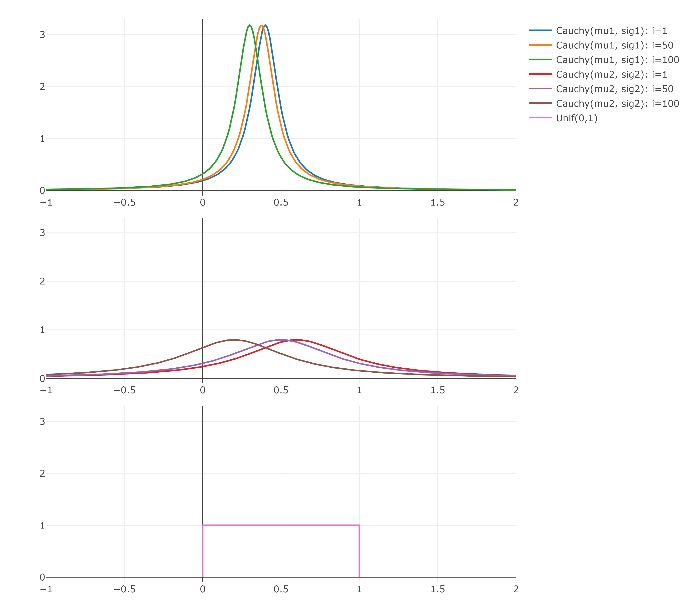

Chapter 6 Challenges of Passiv Investing
This Chapter will analyse two common challenges of Passiv-Investing and creates simple use-cases to test the PSO. The first one is the mean-variance portfolio (MVP) from the modern portfolio theory of Markowitz which is simply said an optimal allocation of assets regarding risk and return. The second challenge is the index-tracking-problem which tries to construct a portfolio with minimal tracking error to a given benchmark.
6.1 Mean-Variance Portfolio (MVP)
Markowitz has shown that diversifying the risk on multiple assets will reduce the overall risk of the portfolio. This result was the beginning of the widely used modern portfolio theory which uses mathematical models to archive portfolios with minimal variance for a given return target. All these optimal portfolios for a given return target are called efficient and create the efficient frontier.
6.1.1 MVP
Let there be \(N\) assets and its returns on \(T\) different days which creates a return matrix \(R \in \mathbb{R}^{T \times N}\). Each element \(R_{t,i}\) contains the return of the \(i\)-th asset on day \(t\). The covariance matrix of the returns is \(\textstyle\sum \in \mathbb{R}^{N \times N}\) and the expected returns are \(\mu \in \mathbb{R}^{N}\). The MVP with risk aversion parameter \(\lambda \in [0,1]\) like shown in (Maringer 2005) can be formalized as follows: \[\begin{equation} \underset{w}{minimize} \ \ \ \lambda \ w^T \textstyle\sum w - (1-\lambda) \ \mu^T w \tag{6.1} \end{equation}\]
The risk aversion parameter \(\lambda\) defines the trade-off between risk and return. With \(\lambda = 1\), the minimization problem only contains the variance term and so on results in a minimum variance portfolio and \(\lambda = 0\) transforms the problem into a minimization of the negative expected returns, which results in a maximum return portfolio. All possible portfolios created by \(\lambda \in [0, 1]\) define the efficient frontier.
6.1.2 MVP example
All possible MVPs combined create the efficient frontier, that is analyzed in this section without going into the details of its calculation. This example uses three assets (equitys: IBM, Google, Apple) and calculates the solution of the MVP for each \(\lambda\). First of all are the daily returns of these three assets are loaded from the year 2020.
returns <- buffer(
get_yf(tickers = c("IBM", "GOOG", "AAPL"), from = "2020-01-01", to = "2020-12-31")$returns,
"CPI_3_assets"
)The cummulated daily returns are:

The expected daily returns and the covariance matrix for the 3 assets can be estimated with the formulas from chapter 4:
p0("estimation of expected daily returns")
mu <- sapply((1+returns), prod)^(1/nrow(returns))-1
mu
p0("estimation of positiv definite covariance matrix")
cov <- as.matrix(nearPD(cov(returns))$mat)
cov## [1] "estimation of expected daily returns"
## AAPL IBM GOOG
## 0.0024166167 -0.0000952478 0.0010448549
## [1] "estimation of positiv definite covariance matrix"
## AAPL IBM GOOG
## AAPL 0.0008665678 0.0004378721 0.0005361398
## IBM 0.0004378721 0.0006646758 0.0004100227
## GOOG 0.0005361398 0.0004100227 0.0005849202These are all the necessary data to solve the MVP with \(\lambda \in \{0.01, 0.02, ..., 0.99, 1\}\). All 100 portfolios are calculated by solving a quadratic minimization problem with long only constraint and the weights should sum up to 1.
portfolios <- data.frame()
mu_and_var <- NULL
for(lambda in seq(0.01,1, 0.01)){
mat <- list(
Dmat = lambda * cov,
dvec = (1 - lambda) * mu,
Amat = t(rbind(
rep(1, ncol(returns)), # sum up to 1
diag(1, nrow=ncol(returns), ncol=ncol(returns)) # long only
)),
bvec = c(
1, # sum up to 1
rep(0, ncol(returns)) # long only
),
meq = 1
)
qp <- solve.QP(Dmat = mat$Dmat, dvec = mat$dvec, Amat = mat$Amat, bvec = mat$bvec, meq = mat$meq)
port <- xts(returns %*% qp$solution, order.by=index(returns))
mu_and_var <- rbind(
mu_and_var,
data.frame("lambda" = lambda, "mu" = mu %*% qp$solution, "sd" = sqrt(t(qp$solution) %*% cov %*% qp$solution))
)
portfolios <- rbind(
portfolios,
qp$solution
)
}
portfolios <- data.frame(portfolios)
colnames(portfolios) <- colnames(returns)The resulting daily returns and standard deviation are transformed to annual returns and standard deviation and are plotted to create the efficient frontier:
# annualize
mu_and_var$mu <- (1+mu_and_var$mu)^250-1
mu_and_var$sd <- mu_and_var$sd * sqrt(250)
plot_ly(data = mu_and_var) %>%
add_lines(y = ~mu, x = ~sd, name = "efficient frontier") %>%
add_trace(x = ~sd, y=~mu, mode="markers", name = "lambda steps") %>%
layout(
title = "3-Asset MVP",
yaxis = list(range=c(min(mu_and_var$mu)*0.9, max(mu_and_var$mu)*1.1)),
xaxis = list(range=c(min(mu_and_var$sd)*0.95, max(mu_and_var$sd)*1.05)),
margin = list(
l = 10,
r = 10,
b = 70,
t = 50,
pad = 4
)
) %>%
html_save()
The portfolio compositions for each \(\lambda\)’s are:
p <- plot_ly(type="bar") %>% layout(title="Portfolio compositions", barmode="stack", xaxis = list(title="lambda", autorange = "reversed"), yaxis = list(title="wgt"))
for(i in 1:ncol(portfolios)){
p <- p %>%
add_trace(x=seq(0.01,1, 0.01), y=portfolios[, i], name = colnames(portfolios)[i])
}
p %>% html_save()
6.2 Index-Tracking Portfolio (ITP)
Indices are baskets of assets that are used to track the performance of a specific asset group. For example, the well-known Standard and Poor’s 500 index (short: S&P 500), tracks the 500 largest companies in the United States. Indices are not purchasable and only serve to visualize the performance of there asset group, without incurring transaction costs. Such indices, or a combination of indices, are used by asset managers as benchmarks to compare the performance of their funds. Each fund has its own benchmark, which contains roughly the same assets that the manager could purchase. If the fund underperforms its benchmark, it may be an indication that the fund manager made poor decisions. That is why fund managers strive to outperform their benchmarks through carefully chosen investments. The past has proven that this is rarely achieved with active management after costs (Desmond Pace and Grima 2016). This resulted in a growing popularity of passive managed funds with its goal to track there benchmarks as close as possible. It can be accomplished through either full or sparse replication. A full replication is a portfolio that has all assets contained in the benchmark, with the same weights. The resulting performance with neglecting transaction costs, would be exactly the benchmark performance. The first problem is that a benchmark can contain inliquid or not purchasable assets. The second problem would be the weighting scheme of indices, because they are often weighted by its market capitalization which will change daily. This would result in daily work of rebalancing and increasing transaction costs to mimic the benchmarks performance as close as possible. To prevent this, sparse replications are used, that contain a fraction of its benchmarks assets. To do so, the portfolio manager must define his benchmark, which should overlap with his fund’s investment universe. Following that, he will reduce this universe using the investors constraints and availability, to create a pool of possible assets. A example pool to track the S&P 500 could consist of the top hundred highest weighted assets in the S&P 500. Now is the time to optimize a portfolio with the goal of matching the benchmark performance and taking into account the investors constraints like ratings, asset sectors and more. Typically, this is accomplished by lowering the variance between the portfolio and benchmark returns:
\[ minimize \ \ Var(r_{p}-r_{bm}) \]
To obtain the portfolio weights \(w\), its necessary to substitute \(r_{p}\) as shown below:
\[ r_{p} = R \times w \]
The Variance is then solved up until a quadratic problem dependent on the portfolio weights \(w\) is represented:
\[\begin{align*} Var(r_{p}-r_{bm}) &= Var(R \times w - r_{bm}) \\ &= Var(R \times w) + Var(r_{bm}) - 2 \cdot Cov(R \times w,r_{bm}) \end{align*}\]
Now the three terms can be solved, beginning with the easiest.
\[ Var(r_{bm}) = \sigma_{bm}^2 = constant \]
The variance of the portfolio can be solved with 4.4.4:
\[ Var(R \times w) = w^T \times Cov(R) \times w \] And the last term can be solved the same way as in (Zivot 2021):
\[\begin{align*} Cov(A \times a, b) &= Cov(b, A \times a) \\ &= E[(b-\mu_{b})(A \times a-\mu_{A} \times a)] \\ &= E[(b-\mu_{b})(A-\mu_{A}) \times a] \\ &= E[(b-\mu_{b})(A-\mu_{A})] \times a \\ &= Cov(A,b) \times a \end{align*}\]
This results in the final formula of the ITP:
\[\begin{equation} \begin{split} Var(r_{p}-r_{bm}) & = Var(R \times w - r_{bm}) \\ & = Var(R \times w) - 2 \cdot Cov(R \times w,r_{bm}) + Var(r_{bm}) \\ & = w^T \times Cov(R) \times w - 2 \cdot Cov(r_{bm}, R)^T \times w + \sigma_{bm}^2 \end{split} \tag{6.2} \end{equation}\]
The minimization problem of the ITP in the general structure needed by many optimizers is:
\[ min(\frac{1}{2} \cdot b^T \times D \times b -d^T \times b) \]
Minimization problems can ignore constant terms and global stretching coefficients and still find the same minimum. This results in the general substitution of the ITP as follows:
\[ D = Cov(R) \]
and
\[ d = Cov(r_{bm}, R) \]
Its possible to add some basic constraints like in the MVP, to sum up the weights to 1 and being long only.
6.2.1 Example ITP
This example will show the results of tracking the S&P 500 with a tracking portfolio that can only invest in IBM, Apple and Google. The time frame is the year 2020 and the goal is to minimize the variance between the portfolios and benchmarks historical returns.
pool_returns <- buffer(
get_yf(tickers = c("IBM", "GOOG", "AAPL"), from = "2020-01-01", to = "2020-12-31")$returns,
"CPI_3_assets"
)
bm_returns <- buffer(
get_yf(tickers = "%5EGSPC", from = "2020-01-01", to = "2020-12-31")$returns,
"CPI_sp500"
) %>% setNames(., "S&P 500")
mat <- list(
Dmat = cov(pool_returns),
dvec = cov(pool_returns, bm_returns),
Amat = t(rbind(
rep(1, ncol(pool_returns)), # sum up to 1
diag(1, nrow=ncol(pool_returns), ncol=ncol(pool_returns)) # long only
)),
bvec = c(
1, # sum up to 1
rep(0, ncol(pool_returns)) # long only
),
meq = 1
)
qp <- solve.QP(Dmat = mat$Dmat, dvec = mat$dvec, Amat = mat$Amat, bvec = mat$bvec, meq = mat$meq)
port_returns <- xts(pool_returns %*% qp$solution, order.by=index(pool_returns)) %>%
setNames(., "tracking portfolio")
setNames(qp$solution, colnames(pool_returns))## AAPL IBM GOOG
## 0.2681058 0.4040352 0.3278591plotly_line_chart_xts(ret_to_cumret(cbind.xts(port_returns, bm_returns))) %>%
html_save()